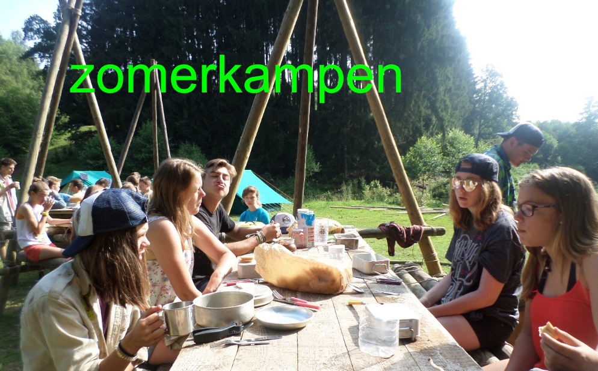

Kapoenen
Kapoenen Welpen
Welpen Jongverkenners
Jongverkenners Verkenners
Verkenners17 – 18 jaar
Jij en Ik een Noodzaak — de laatste stap richting leiding.

Van gast naar leiding
Jin, Jij en Ik een Noodzaak. Jins leven één jaar intens samen in hun jintak. In hun eigen 'jonge' stijl werken ze gekke activiteiten, projecten en zelfs hun eigen kamp uit. Al doende leren ze samenwerken en verantwoordelijkheid opnemen.
Hieruit groeit hun engagement voor de groep en voor de samenleving. Jins draaien mee als leiding: ze geven activiteiten onder begeleiding van de ervaren leiding, met de focus vooral op het maken van activiteiten en voeling met de gasten.
Nadien worden de jins volwaardige leiding, met eventueel wat extra verantwoordelijkheden.

Uniform
- Sjaaltje en hemd zijn verplicht
- Trui en T-shirt zijn vrijblijvend